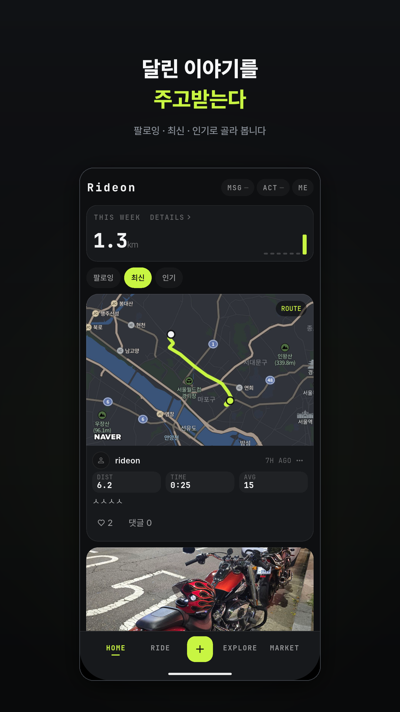
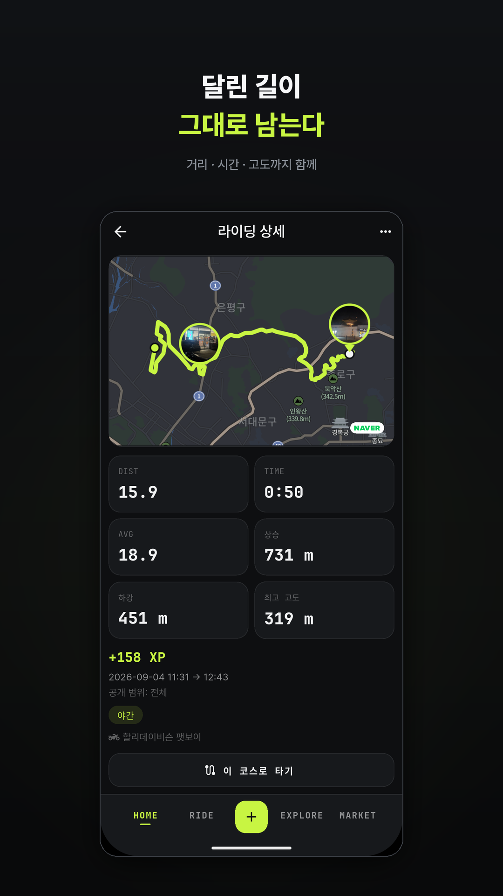
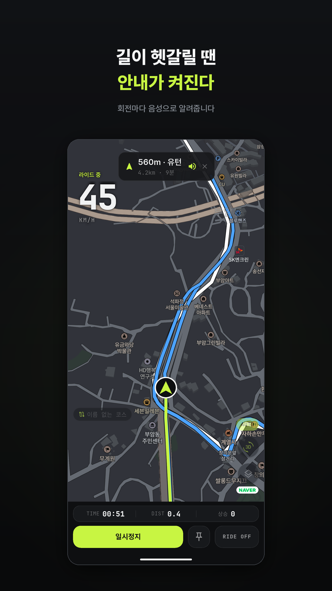
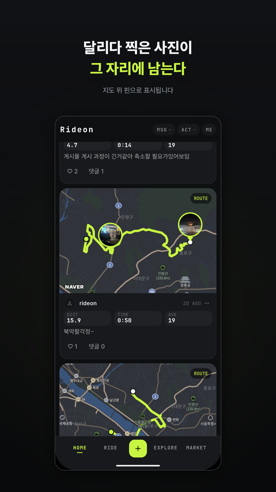
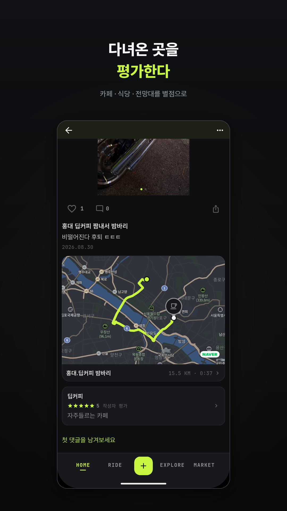

달린 길이 그대로 남는다
오토바이 라이더를 위한 기록·공유 앱입니다. 주행 경로를 기록하고, 다녀온 장소를 남기고, 함께 달릴 사람을 찾습니다.
비공개 베타 테스트 중달린 길이 그대로 남는다
화면을 꺼도, 신호가 끊겨도 기록은 계속됩니다. 끝나면 거리·시간·평균 속도와 지도가 정리돼 남습니다.
다녀온 곳을 남긴다
주행 중 눈에 띈 곳은 핀 하나로 찍어두고, 끝나고 사진과 별점을 붙여 올립니다.
남의 코스를 따라간다
마음에 든 코스는 담아뒀다가 그대로 탑니다. 출발점까지는 음성으로 안내합니다.
같이 달릴 사람을 찾는다
집결지와 경유지를 정해 방을 열고, 달리는 동안 서로 위치를 봅니다. (베타 참여자 우선 공개)





지금은 비공개 테스트 기간입니다. Android는 테스터 그룹에 등록된 구글 계정으로 위 [Android 테스트 참여]를 눌러야 스토어에 앱이 보입니다 — 폰의 Play 스토어에 로그인된 계정과 같아야 합니다. iOS는 TestFlight 링크로 바로 설치됩니다.
계정을 지우고 싶으시면 앱의 설정에서 바로 할 수 있고, 앱 밖에서 요청하는 방법은 계정 삭제 안내에 있습니다.